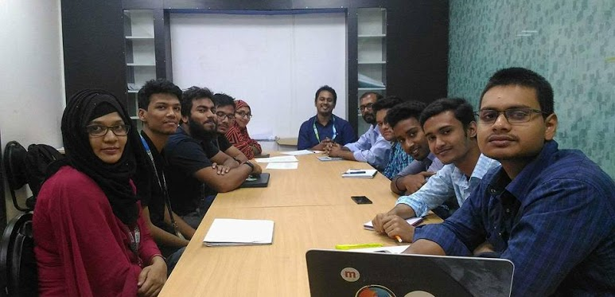

The Daffodil International University CSE Natural Language Processing and Machine Learning Research LAB group studies a range of core NLP problems (such as parsing, information extraction, and machine translation) as well as emerging challenges (such as modeling and processing social media text, analyzing linguistic style, and jointly modeling language and vision). It also discuss about data science and machine learning related problem solutions. Our research is highly collaborative: we regularly work with researchers across the globe including many other computer scientists, computational linguists, speech researchers, data and social scientists.
We also engage a wide range of industry partners like Microsoft Research, Google and Facebook. We are currently working on the project for making Bengali Language more computation friendly.
Our students, faculty and alumni are widely recognized as being among the best in the field, winning prestigious research fellowships and paper awards at all of the top venues. Moreover, our work has been featured in numerous local and national media outlets. Learn more about who we are behind the team and what we do in this exciting research environment!
